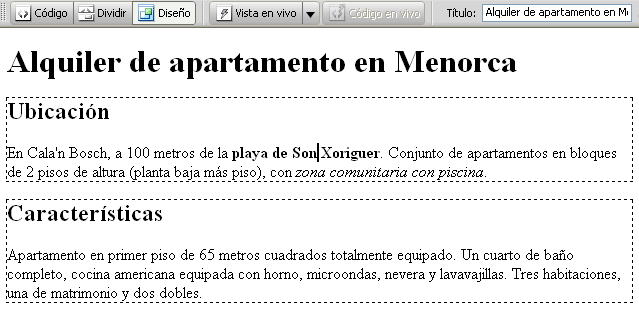

Guía de aprendizaje
Dreamweaver CS4
Tutorial 1. Crear una página web para alquilar un apartamento
Desarrollo del tutorial: paso 14 de 17
Y éste en vista de diseño:
Es interesante ver cómo Dreamweaver marca con una línea discontinua la situación de las capas (etiqueta <div>).